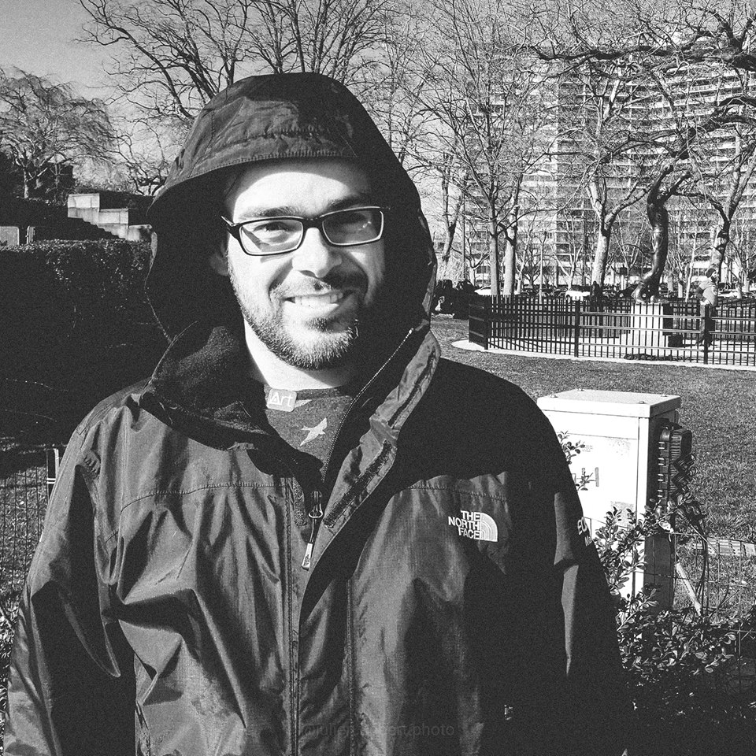

Bonjour,
Je me présente, mon nom est Julien Hébert, j'ai 32 ans et je vis à Québec.

Voici 4 caractéristiques qui me représentent :
Mes études
Tout de suite après mon secondaire, j'ai fait un DEP en Mécanique Automobile au CFP de Lévis, mais j'ai travaillé dans ce domaine environ 3 ans uniquement.
J'ai aussi fait un cours en Démarrage d'une Entreprise au CFP Maurice-Barbeau et pour terminer, je suis présentemnet le AEC en Développement Web à distance au Cégep de Trois-Rivières.
Remonter au haut de la page

Depuis le début de l'année 2019 j'ai commencé à faire du "Sim Racing". Il s'agit d'un jeu ou d'un simulateur sur lequel on fait des courses en ligne.
Remonter au haut de la page

Loisirs
| Loisirs |
Depuis quand |
| Photographie |
2014 |
| Sim Racing |
2018-2019 |
| Montage vidéo |
2019 |
Je pratique la photographie depuis cinq ans, je fais principalement de la photographie de course à pieds (Ultra-Trail) et bien entendu de course automobile. Le Sim Racing fait maintenant partie de mes loisirs et j'adore aussi faire du montage vidéo.
Remonter au haut de la page

Un de mes rêves est de devenir un Sim Racer professionnel et de participer aux plus gros tournois mondiaux.
Remonter au haut de la page